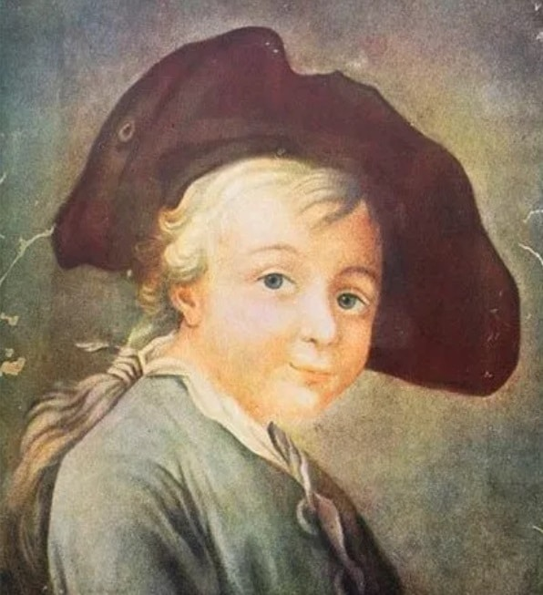
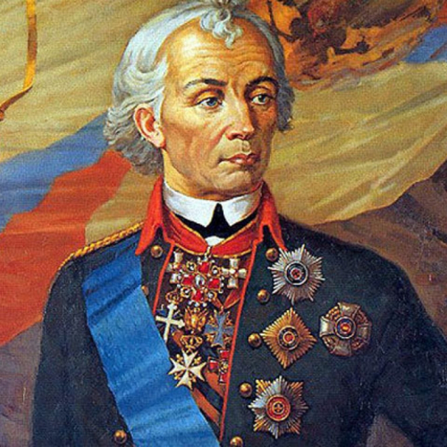
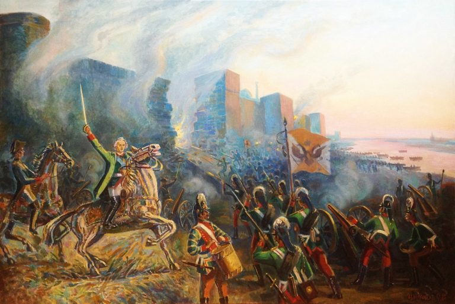
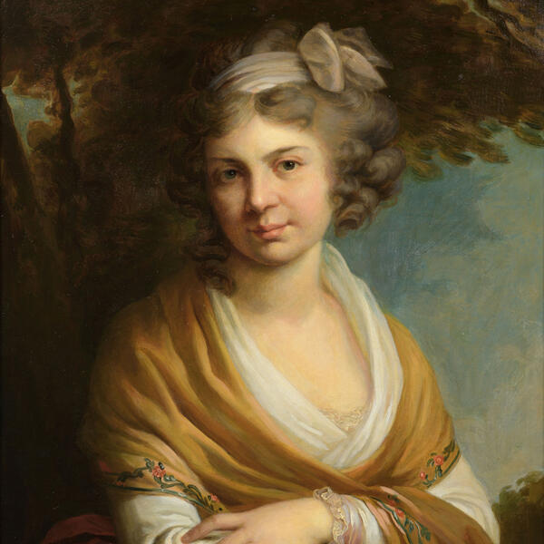
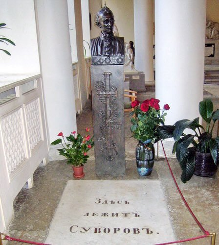

Подвиги А.В. Суворова:
Детство:
Родился Александр Суворов 24 ноября 1730 года в Москве. Его отцом был генерал Василий Суворов, крестник самого великого Петра I.
В начале своей карьеры был обычным денщиком, потом занял должность царского переводчика.
В годы правления Екатерины II переведен в тайную канцелярию, где за долгие годы службы и выдающиеся заслуги получил звание генерала.
Перед самой отставкой был избран сенатором. Маму Александра Суворова звали Авдотья Манукова, ее предки принадлежали к старинному дворянскому роду.
Дед Суворова по материнской линии занимал должность вице-президента в Вотчинной коллегии.
Назвать сына Александром решил его отец, который написал первый в России военный словарь.
Свое имя мальчик получил не просто так. Именно древнерусский полководец Александр Невский вдохновил Василия Суворова дать сыну такое же имя.
Военным делом мальчик увлекся с детства, этому способствовала шикарнейшая библиотека, которую Василий Суворов собрал в своем имении.
Только-только научившись читать, Саша интересовался не детскими сказками и рассказами, а артиллерийским и фортификационным делом.
Благо, пособий по этим наукам в библиотеке было более, чем достаточно.

Военная служба:

Военная карьера Александра Суворова началась в 1742 году, когда его взяли в Семеновский полк мушкетером.
Спустя шесть лет, уже в чине офицера, он поступил на действующую военную службу.
В те годы Суворов занялся совершенствованием своих знаний в этой области и поэтому записался на курсы Санкт-Петербургского кадетского корпуса.
Помимо этого он вплотную занялся изучением иностранных языков.
В 1754 году поручик Александр Суворов получил назначение в Ингерманландский полк пехоты.
Спустя год он стал служащим Военной коллегии, где находился вплоть до 1758-го.
В самом начале Семилетней войны Александр проходил службу в одном из тыловых подразделений.
Сразу он был провиантмейстером, прошел весь карьерный путь и стал премьер-майором.
Это стало хорошим опытом в изучении работы служб, отвечающих за обеспечение тыла и снабжения армии.
В 1758 году Суворов оказывается в действующей армии.
Через год он принял боевое крещение — во главе драгунского эскадрона он сумел разбить такой же эскадрон драгун из Германии. Те с позором бежали.
Это сражение датируется 1759 годом и проходило под Кунесдорфом.
Оно знаменито тем, что переломило ход Семилетней войны и стало завершающим аккордом в победе над прусской армией.
Зарекомендовав себя как талантливый военный, Суворов получил назначение на должность дежурного офицера при Виллиме Ферморе, который в то время был главнокомандующим.
Потом в военной карьере Александра была не менее успешная Берлинская операция.
Помимо этого они занимались уничтожением запасов продуктов вражеской армии.
В 1762 году Суворову присвоили звание полковника, и он получил в подчинение Астраханский полк.
Его усердие в воинской службе не осталось незамеченным императрицей, которая вознаградила его собственным портретом.
Именно это время стало настоящим переломом в биографии Суворова, с этого момента он стал знаменитым.
В 1763-1769-м годах Александр Васильевич возглавлял Суздальский полк, местом дислокации которого была Новая Ладога.
Именно этими годами датируется написание «Полкового учреждения», своеобразного устава, по которому велась воспитательная работа с солдатами, их боевая подготовка и условия внутренней службы.
В 1768 году Суворов удостоился звания бригадир.
Войны:
Настоящим полководцем Суворов стал именно во времена правления Екатерины II.
Этому способствовали и две Русско-турецкие войны, которые он выиграл.
В 1770 году Суворова произвели в генерал-майоры.
После того, как он разгромил турков в Туртукайском и Козлуджинском сражениях, ему присвоили звание генерал-поручика.
Это были годы, когда непосредственным командиром Суворова был Петр Румянцев.
То, что Суворов постепенно становится настоящим полководцем, стало видно во время второй Русско-турецкой войны.
В 1788-м имя Суворова прогремело во время битвы за город Кинбурн. Именно там он был впервые серьезно ранен.
В 1796-м на престол вместо умершей Екатерины взошел Павел I, отношения с которым у Суворова никак не складывались.
В 1797 году император издает указ об отставке Александра Васильевича.
В начале того года он оказался в ссылке в родовом имении, однако, когда политическая ситуация в Европе накалилась, о нем немедленно вспомнили.
Павел Первый получил прошение правителей Британии и Австрии, чтобы он поставил именно Суворова командовать союзными войсками.
Суворов смог провести несколько блистательных боев, закончившихся сокрушительным разгромом противника.
Войска под руководством Суворова вскоре гордо шагали по Милану и Турину, сокрушительное поражение французской армии произошло и на речке Треббия.
После этого сражения от вражеской армии осталась половина.
Остатки французской армии под руководством генерала Жубера отправилась на Пьемонт. В августе того же года они оккупировали город Нови-Лигуре.
Армия союзников под руководством Суворова приняла этот вызов. Сражение длилось на протяжении восемнадцати часов, французы потерпели полное фиаско.
Семь тысяч их солдат навечно остались на этом поле боя. Смерть настигла и командующего Жубера.
Это сражение имело решающее значение для окончания Итальянского похода.
Император Павел I был просто в шоке от блестящей победы, и отдал распоряжение чтить Суворова на уровне особ императорской фамилии.
В 1799 году Суворов предпринял переход через Альпы, который с тех пор навечно внесен историю побед российского оружия.
Император был в полном восхищении, ведь Суворову удалось выйти победителем в сражении с самой природой.
После покорения горных хребтов Швейцарии и в память о его былых заслугах, Суворову присваивают звание генералиссимуса.
Выше этого звания военная иерархия не знает.
Полководец стал создателем абсолютно новой военной доктрины. Используя личный опыт ведения боя, он сумел создать революционную стратегию и тактику ведения боя.
Его книгу под названием «Наука побеждать» держали на столе самые известные русские военные начальники.
Среди лучших воспитанников генералиссимуса можно назвать Николая Раевского, Михаила Кутузова, Петра Багратиона.
Суворов имеет все существующие высшие военные награды, причем орден Святого Георгия всех 3-х степеней.
Заслуги Суворова отмечены еще при его жизни. В России начали появляться суворовские училища, где растили достойные кадры для армии.
Орден Суворова доставался исключительно за проявленный героизм на фронтах Великой Отечественной войны.
Имя Александра Суворова носят морские суда, среди которых есть и боевые.
Источник: https://biographe.ru/politiki/aleksandr-suvorov

Личная жизнь:

Если на полях военных сражений Суворова ждал успех, то в личной жизни он потерпел полное фиаско. Военное ремесло настолько увлекло молодого Суворова, что он посвятил ему лучшие годы, когда приходит любовь, создается семья, рождаются дети. К сорока годам у Суворова не было ничего, кроме службы и побед в военных сражениях. Эта ситуация очень не нравилась его отцу, который и решил заняться устройством личной жизни любимого отпрыска. Он нашел для сына подходящую партию и сумел обвенчать их. В итоге Александр женился на Варваре Прозоровской, 23 лет от роду, дочери обедневших дворян.
В конце 1773-го они помолвились, а в начале следующего года поженились.
Они были абсолютно разными — маленький тщедушный 40-летний жених и пышущая здоровьем красавица-невеста.
Но не только внешне они отличались друг от друга.
Александр имел отличное образование, он владел пятью языками, тогда как его избранница не могла написать слово, чтобы не сделать в нем ошибку.
Ее интересовали исключительно наряды и светские приемы.
Узнав о том, что супруга ему изменяет, Александр не стал это терпеть и подал прошение развестись.
Однако расторжение брака оказалось не таким легким, против него была императрица.
Она наградила Суворова очередной медалью и просила оставить все, как есть.
В 1784-м полководец опять заговорил о разводе, причем во всеуслышание назвал имя человека, с которым ему изменяет жена.
Но тут родился сын Аркадий, которого Александр не собирался признавать своим. Только спустя двенадцать лет он признал его сыном.
Расторгнуть брак снова не удалось, но с тех пор супруги жили каждый своей жизнью. Суворов давал на содержание жены 1200 рублей, дочь отправил на воспитание в Смольный институт и запретил ей встречаться с мамой.
После признания Аркадия своим сыном в 1796 году Александр определил его в юнкера. Сын полководца прожил короткую жизнь, утонул, когда ему исполнилось 26.
Однако успел четыре раза сделать Суворова дедом. У дочери Суворова родилось шесть наследников.
Суворов и его жена так и прожили каждый в своем одиночестве до самой смерти.
Смерть:
После героического перехода через Альпы Суворов серьезно заболел.
Вернувшись в свое имение в Кобрине, он слег. А в это время его ждали в Петербурге, чтобы оказать положенные почести.
К полководцу направили доктора, который смог поставить его на ноги.
По приезде в Петербург Суворов снова почувствовал резкое недомогание и слег, чтобы больше уже не подняться.
18 мая 1800 года его не стало. На церемонии прощания император отсутствовал.
Местом упокоения Александра Суворова стала Благовещенская церковь Александро-Невской лавры.
